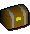
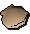
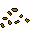
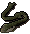
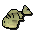

")
Fishing - Members' Table
There is a vast array of fish available to RuneScape members. A skilled fisher can catch mackerel or cod from the rivers, or take the skill to the next level and try shark and manta ray from the seas.
| Produce | Level | Technique | Tool | Experience Gained | Location |
![[image]](../../img/main/kbase/items/food/fish/karambwanji1.gif) Karambwanji Karambwanji |
5 |
Net | ![[image]](../../img/main/kbase/items/fishing_tools/object3.gif) |
5 | Brook, south of Tai Bwo Wannai Village North-west of Shilo Village |
| Casket | 16 |
Big net | ![[image]](../../img/main/kbase/items/fishing_tools/object5.gif) |
10 | Any big net Fishing spot |
![[image]](../../img/main/kbase/items/food/fish/mackerel1.gif) Mackerel Mackerel |
16 |
Big net | |
20 | Catherby Fishing Guild |
| Oyster | 16 |
Big net | |
10 | Any big net Fishing spot |
![[image]](../../img/main/kbase/items/fishing_randoms/seaweed.gif) Seaweed Seaweed |
16 |
Big net | |
1 | Any big net Fishing spot |
![[image]](../../img/main/kbase/items/food/fish/cod1.gif) Cod Cod |
23 |
Big net | |
45 | Catherby Fishing Guild |
![[image]](../../img/main/kbase/items/food/fish/slimey_eel.gif) Slimy eel Slimy eel |
28 |
Bait |  | 65 | Mort Myre Swamp Lumbridge Swamp Dungeon |
![[image]](../../img/main/kbase/items/food/fish/giant_frogspawn.gif) Frog spawn Frog spawn |
33 |
Net | |
75 | Lumbridge Swamp Dungeon |
| Cave eel | 38 |
Bait | 80 | Mort Myre Swamp Lumbridge Swamp Dungeon |
|
![[image]](../../img/main/kbase/skills/hunter/items/rainbowfish.gif) Rainbow fish Rainbow fish |
38 |
Fly fishing | ![[image]](../../img/main/kbase/skills/hunter/items/feathers.gif) |
80 | Any fly-fishing spot |
![[image]](../../img/main/kbase/items/food/fish/bass1.gif) Bass Bass |
46 |
Big net | |
100 | Catherby Fishing Guild |
![[image]](../../img/main/kbase/items/food/fish/lava_eel.gif) Lava eel Lava eel |
53 |
Oily fishing rod | ![[image]](../../img/main/kbase/items/fishing_tools/oily_fishing_rod.gif) |
60 | Taverley Dungeon |
![[image]](../../img/main/kbase/items/food/fish/raw_monkfish1.gif) Monkfish Monkfish |
62 |
Net | |
120 | The Piscatoris Fishing Colony (must have completed Swan Song) |
![[image]](../../img/main/kbase/items/food/fish/karambwan1.gif) Karambwan Karambwan |
65 |
Karambwan vessel | ![[image]](../../img/main/kbase/items/fishing_tools/object7.gif) |
105 | Karamja North of the Glider |
![[image]](../../img/main/kbase/items/food/fish/shark1.gif) Shark* Shark* |
76 |
Harpoon | ![[image]](../../img/main/kbase/items/fishing_tools/object1.gif) |
110 | Fishing Guild Catherby |
![[image]](../../img/main/kbase/items/food/fish/seaturtle.gif) Sea turtle Sea turtle |
79 |
Fishing Trawler | n/a | 38 | Fishing Trawler |
![[image]](../../img/main/kbase/items/food/fish/mantaray1.gif) Manta ray Manta ray |
81 |
Fishing Trawler | n/a | 46 | Fishing Trawler |
| Cavefish | 85 |
Bait | 300 | Living Rock Caverns | |
![[image]](../../img/main/kbase/items/food/fish/rocktail.gif) Rocktail Rocktail |
90 |
Bait (living minerals) |
![[image]](../../img/main/kbase/items/fishing_tools/living_minerals.gif) |
380 | Living Rock Caverns |
* It is possible for members to catch two of this fish per fishing attempt. Click here to find out more.
Click here to view the Fishing FAQs

More articles in
Fishing
|
|
|
Further Help
If this article does not help you, you may find the following sections of the RuneScape site helpful:
|
|